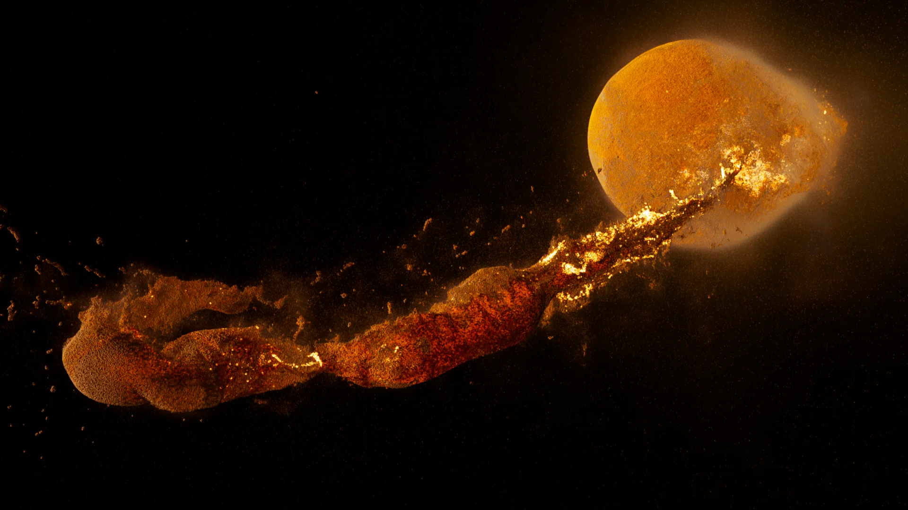

How do planets form?
Our solar system used to be a much more violent place, with early planets crashing into each other to create the worlds we see today. Several billions of years ago, a collosal cloud of gas, dust, and ice started to collapse under its own gravity. In the centre, enough material (mostly hydrogen) clumped together at higher and higher pressures and temperatures to form the Sun. Around this star, hundreds of small planets start to form in a disk, as lumps of rock and ice clump together into ever larger pieces. Rocky planets like Earth were born as tens of these initial planets crashed into each other in massive collisions called giant impacts.
How do we study giant impacts?
Impacts between whole planets are far too large to test with full-scale experiements. So, we study these dramatic events using supercomputer simulations, calculating how planetary materials evolve at this scale of gravity and pressure forces.
Lab experiments are also important, to improve our models for how materials behave, and to test that our simulations are performing reliably.
New missions to the Moon, like Artemis, and new studies of the Earth, continue to uncover more of the complicated shared history of the planet and its moon. New measurements also reveal new details for us to try and match with simulations, to rule out or discover new scenarios by testing what they can and can't explain.
The simulations we run use a common method called smoothed particle hydrodynamics, or SPH. SPH represents or models the planets with millions to billions of particles. With the computer, we calculate the gravity and pressure forces between every particle, to update their acceleration and movement. We then compute their new positions a small step in time in the future, then recalculate the new forces, and repeat. We repeat this many, many times to simulate how the whole system evolves.
How did the Moon form?
Our Moon is big. Really big! At over 1% the mass of the Earth, it is over a hundred times more massive than all other large moons in our solar system compared with their host planets.
Some of the giant planets' moons are a bit larger than ours in itself, but they are tiny as a fraction of the planet and, unlike ours, mostly formed along with the planet, kind of like the planets did around the Sun.
Instead, Earth's moon is thought to have formed from a giant impact, near the end of the planet's main growth. The debris from the collision is sprayed out into a disk. The moon would then slowly clump together out of the ejected material.
This is the best and perhaps only way to explain how a moon as big as ours could form around the Earth. An impact could also neatly explain why the Moon has such a small iron core, because most of the impactor planet's core would sink into the Earth.
However, several questions remain about exactly what kind of impact scenario is the best explanation for the origin of our moon.
Can you make a Moon?!
See if you can choose the right parameters for an impact to make a debris disk with enough material and orbiting spin ("angular momentum") that a moon like ours could grow out of it. What speed, angle, and size of impactor works best?
Can you find the special impact in this set, where a big moon forms immediately? Using high-resolution simulations like these, we recently discovered that a range of impact scenarios can make a big moon directly, without first spreading out the material into a disk. This opens up new options for the Moon's origin and early evolution.